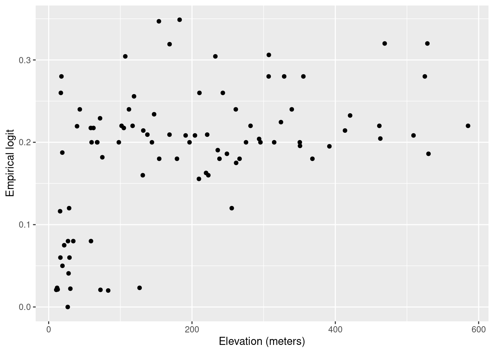
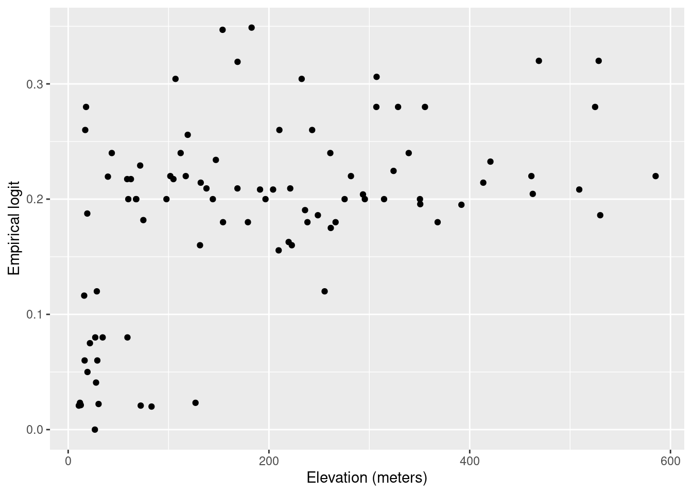
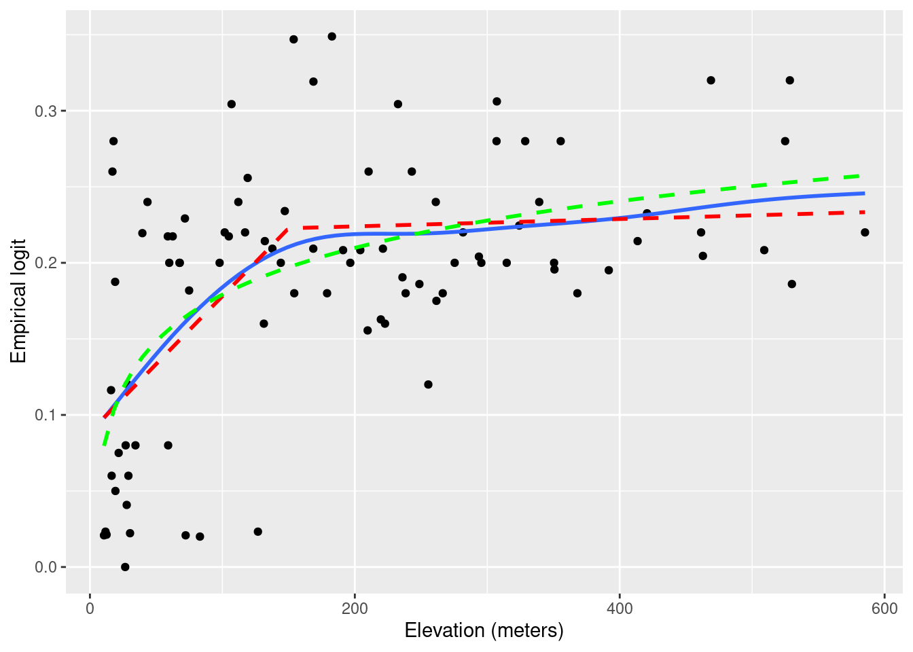
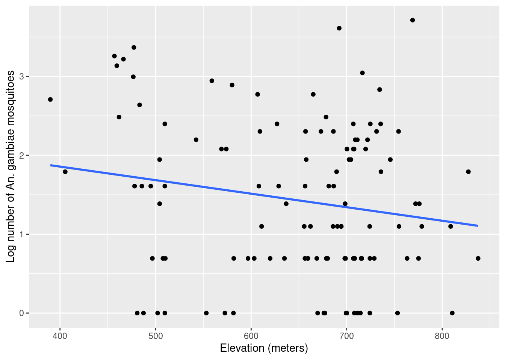
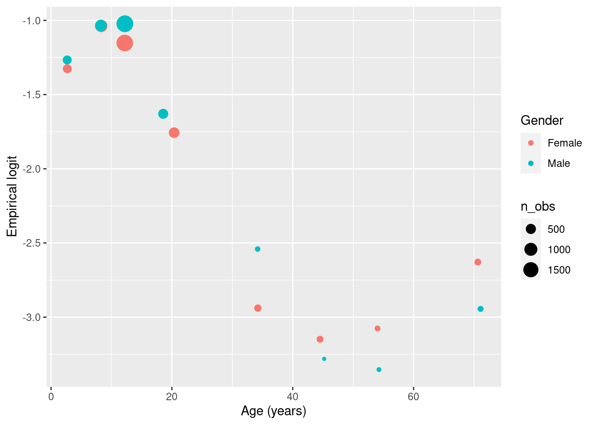
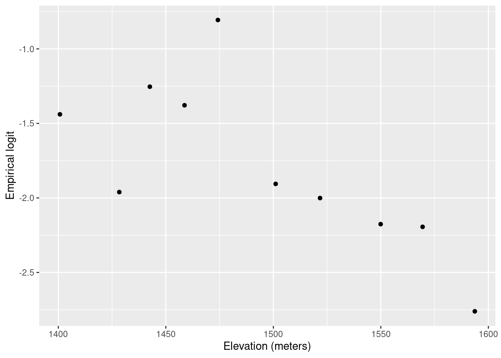

liberia$prev <- liberia$npos/liberia$ntest
ggplot(liberia, aes(x = elevation, y = prev)) + geom_point() +
labs(x="Elevation (meters)",y="Prevalence")
| Function | R Package | Used for |
|---|---|---|
lmer |
lme4 |
Fitting linear mixed models |
glmer |
lme4 |
Fitting generalized linear mixed models |
glgm |
RiskMap |
Fitting generalized linear mixed models |
As illustrated in Figure 1.5, exploratory analysis is the first step that should be carried out in a statistical analysis. This stage is essential to inform how covariates should be introduced in the model and, in our case, whether the variation unexplained by those covariates exhibits spatial correlation.
In the exploratory analysis of count data, we will also look at how overdispersion, which is a necessary, though not sufficient, condition for residual spatial correlation.
Assessment of the association between the health outcome of interest and non-categorical (i.e. continuous) risk factors can be carried using graphical tools, such scatter plots. The graphical inspection of the empirical association between the outcome and the covariates is especially useful to identify non-linear patterns in the relationship which should then be accounted for in the model formulation.
In this section, we look more closely at the case when the observed outcome is a count which requires a different treatment from continuously measured outcomes, which are generally covered by most statistics textbooks (see, for example, Chapter 1 of Weisberg (2014)).
Let us first consider the example of the river-blindness data in Liberia (Section 1.4.2), and examine the association between prevalence and elevation. We first generate a plot of the prevalence against the measured elevation at each of the sample locations
liberia$prev <- liberia$npos/liberia$ntest
ggplot(liberia, aes(x = elevation, y = prev)) + geom_point() +
labs(x="Elevation (meters)",y="Prevalence")
The plot shown in Figure 3.1 shows that, as elevation increases from 0 to around 150 meters, prevalence rapidly increases to around 0.25 and, for larger values in elevation than 150 meters, the relationship levels off. This begs the question of how we can account for this in a regression model. To answer this question rigorously, however, the plot in Figure 3.1 cannot be used. This is because, when the modelled outcome is a bounded Binomial count, regression relationships are specified on the logit-transformed prevalence (log-odds) scale; see Table 1.2 in Section Section 1.5 . To explore regression relationships in the case of prevalence data, it is convenient to use the so-called empirical logit in place of the empirical prevalence. The empirical logit is defined as
\[ l_{i} = \log\left\{\frac{y_i + 1/2}{n_i - y_i + 1/2}\right\} \tag{3.1}\]
where \(y_i\) are the number of individuals who tested positive for riverblindness and \(n_i\) is the total number of people tested at a location. The reason for using the empirical logit, rather than the standard logit transformation applied directly to the empirical prevalence, is that it allows to generate finite values for empirical prevalence values of 0 and 1, for which the standard logit transformation is not defined.
# The empirical logit
liberia$elogit <- log((liberia$npos+0.5)/
(liberia$ntest-liberia$npos+0.5))
ggplot(liberia, aes(x = elevation, y = elogit)) + geom_point() +
# Adding a smoothing spline
labs(x="Elevation (meters)",y="Empirical logit") +
stat_smooth(method = "gam", formula = y ~ s(x),se=FALSE)+
# Adding linear regression fit with log-transformed elevation
stat_smooth(method = "lm", formula = y ~ log(x),
col="green",lty="dashed",se=FALSE) +
# Adding linear regression fit with change point in 150 meters
stat_smooth(method = "lm", formula = y ~ x + pmax(x-150, 0),
col="red",lty="dashed",se=FALSE)

Figure 3.2 shows the scatter plot of the empirical logit against elevation. In this plot, we have also added three lines though the stat_smooth from the ggplot2 package. Using this function, we first pass the term gam to method to add a penalized smoothing spline (Hastie, Tibshirani, and Friedman 2001), represented by the blue solid line. The smoothing spline allows us to better discern how the type of relationship and how to best capture it using a standard regression approach. As er can see from Figure 3.2, the smoothing spline corroborates our initial observation of a positive relationship up to about 150 meters, followed by a plateau.
To capture this non-linear relationship, we can use the two following approaches. The first is based on a simple log-transformation of elevation and is represented in Figure 3.2 by the green line. If were to express this relationship using a standard Binomial regression model, this would take the form \[ \log\left\{\frac{p(x_i)}{1-p(x_i)}\right\} = \beta_0 + \beta_1 \log\{e(x_i)\} \tag{3.2}\] where \(p(x_i)\) and \(e(x_i)\) are the river-blindness prevalence and elevation at sampled location \(x_i\), respectively.
Alternatively, the non-linear effect of elevation on prevalence could be captured using a linear spline. Put in simple terms, we want to fit a linear regression model that allows for a change in slope above 150 meters. Formally, this is expressed in a Binomial regression model as \[
\log\left\{\frac{p(x_i)}{1-p(x_i)}\right\} = \beta_0 + \beta_1 e(x_i) + \beta_{2} \max\{e(x_i)-150, 0\}.
\tag{3.3}\] Based on the equation above, the effect of elevation below 150 meters is quantified by the parameter \(\beta_1\). Above 150 meters, instead, the effect of elevation becomes \(\beta_1 + \beta_2\). Note that the function pmax (and not the standard base function max) should be used in R when the computation of the maximum between a scalar value and each of the components of a numeric vector is required.
Before we move on, it is important to briefly discuss the differences between using the logarithmic transformation (Equation 3.2) and the linear spline (Equation 3.3). We observe that both curves provide a similar fit to the data, with larger differences observed for larger values in elevation, where the log-transformed elevation models yields larger values for the predicted prevalence. This also suggests that if we were to extrapolate the predictions beyond 600 meters in elevation the implied pattern by the model with the log-transformed elevation would predict an increasingly larger elevation, which is unrealistic, since the fly that transmits the diseases cannot breed at those altitudes. The linear spline model instead would generate predictions that would be very similar to those observed between 150 and 600 meters. From this point view, the linear spline model would thus have more scientific validity than the other model. However, which of the two approaches should be chosen to model the effect of elevation is a question that closely depends on the research question to be addressed.
If the interest of the study was in better understanding the association between elevation and prevalence, the linear spline model does not only provide a more credible explanation but also its regression parameters can be more easily interpreted. In fact, for a unit increase in elevation, the multiplicative change in the odds for river-blindness is \(\exp\{\beta_1\}\), if elevation is below 150 meters, and \(\exp\{\beta_1+\beta_2\}\), if elevation is above 150 meters. When instead we use the log-transformed elevation, the interpretation of \(\beta_1\) in Equation 3.2 is slightly more complicated, as it is based on the multiplicative increase in elevation by the same amount given by the base of the algorithm, which is about \(e \approx 2.718\)1. To avoid this, one could rescale the regression coefficient as, for example, \(\beta_1/\log_{2}(e)\) which would be interpreted as the multiplicative change in the odds for river-blindness for a doubling in elevation. However, a doubling in elevation is less meaningful when considering larger values of elevation.
When the goal of statistical analysis is instead in developing a predictive model for the outcome of interest, the explanatory power and interpretability of the model may be of less concern. For this reason, the model with the log-transformed model could be preferred over the model with the linear spline, if it shown to yield more predictive power. We will come back to this point again in Chapter 5, where will show how to assess and compare the predictive performance of different geostatistical models.
The other type of aggregated count data that we consider are unbounded counts. The Anopheles mosquitoes data-set (Section 1.4.4) is an example of this, since there is no upper limit to the number of mosquitoes that can be trapped at a location. Let us consider the covariate represented by elevation. In this case, the simplest model that can be used to analyse the data is a Poisson regression, where the linear predictor is defined on the log of the mean number of mosquitoes (Table 1.2). Hence, exploratory plots for the association with covariates should be generated using the log transformed counts of mosquitoes. In this instance, to avoid taking the log of zero, we can add 1 to the reported counts, if required. The variable of the An.gambiae in the anopheles data-set does not contain any 0, hence we simply apply the log tranformation without adding 1.
anopheles$log_counts <- log(anopheles$An.gambiae)
ggplot(anopheles, aes(x = elevation, y = log_counts)) + geom_point() +
# Adding a smoothing spline
labs(x="Elevation (meters)",y="Log number of An. gambiae mosquitoes") +
stat_smooth(method = "lm", formula = y ~ x, se=FALSE)
The scatter plot of Figure 3.3 shows that there is a negative, though weak, association, with the average number of mosquitoes decreasing for increasing elevation. In this instance, the assumption of a linear relationship with elevation would be a reasonable choice.
We now consider the malaria data from Kenya (Section 1.4.3) where the main outcome is the result from a rapid diagnostic test (RDT) for malaria from individuals within households. In this case, because the outcome only takes two values, 1 for a positive RDT test result and 0 otherwise, the direct application of the empirical logit from Equation 3.1 would not help us to generate informative scatter plots. Throughout the book, we will consider the data from the community survey only, hence we work with a subset of the data which we shall name malkenya_comm
malkenya_comm <- malkenya[malkenya$Survey=="community", ]To show how this issue can be overcome, let us consider the variables age and gender. To generate a plot that can help us understand between the relationship with malaria prevalence and the two risk factors, we proceed as follows.
# Grouping of ages into classes defined through "breaks"
malkenya_comm$Age_class <- cut(malkenya_comm$Age,
breaks = c(0, 5, 10, 15, 30, 40, 50, 100),
include.lowest = TRUE)Using the cut function, we first split age (in years) into classes through the argument breaks. The classification of age into \([0,5]\), \((5, 10]\) and \((10, 15]\) is common in many malaria epidemiology studies, as children are one of the groups at highest risk malaria. The choice of the other classes of age reflects instead the need to balance the number of observations falling in each of the classes.
# Computation of the empirical logit by age groups and gender
age_class_data <- aggregate(RDT ~ Age_class + Gender,
data = malkenya_comm,
FUN = function(y)
log((sum(y)+0.5)/(length(y)-sum(y)+0.5)))We then compute the empirical logit, using the total number of cases within age group and by gender. For a given age group and gender, which we denote as \(\mathcal{C}\), the empirical logit in Equation 3.1, now takes the form \[
l_{\mathcal{C}} = \log\left\{\frac{\sum_{i \in \mathcal{C}} y_{i} + 0.5}{|\mathcal{C}|- \sum_{i \in \mathcal{C}} y_{i} + 0.5} \right\}
\tag{3.4}\] where \(y_i\) are the individual binary outcomes and \(i\in \mathcal{C}\) is used to indicate that the sum is carried out over all the individuals who belong the class \(\mathcal{C}\), identified by a specific age group and gender. Finally, \(|\mathcal{C}|\) is the number of individuals who fall within \(\mathcal{C}\). In the code above, the empirical logit in Equation 3.4 is computed using the aggregate function. An inspection of the object age_class_data, a data frame, shows that the empirical is found in the column named RDT.
# Computation of the average age within each age group
age_class_data$age_mean_point <- aggregate(Age ~ Age_class + Gender,
data = malkenya_comm,
FUN = mean)$Age
# Number of individuals within each age group, by gender
age_class_data$n_obs <- aggregate(Age ~ Age_class + Gender,
data = malkenya_comm,
FUN = length)$AgeIn order to generate the scatter-plot, we compute the average age within each age group by gender, and use these as our values for the x-axis. Note that since we only need to obtain the average age from this output, we use $Age to extract this only and allocate to the column age_mean_point. Finally, we also compute the number of observations within each of classes and place this in n_obs.
ggplot(age_class_data, aes(x = age_mean_point, y = RDT,
size = n_obs,
colour = Gender)) +
geom_point() +
labs(x="Age (years)",y="Empirical logit") 
The resulting plot in Figure 3.4 shows the empirical logit against age by gender, with the size of each of the points proportional to the number of observations falling within each class. The observed patterns are explained by the fact that young children, especially those under the age of five, are particularly vulnerable to severe malaria infections. This is primarily due to their immature immune systems and lack of acquired immunity. As individuals grow older, they generally develop partial immunity to malaria through repeated exposure to the disease. This acquired immunity can provide some level of protection against severe malaria. At the same time, gender roles and activities can influence exposure to malaria-carrying mosquitoes. For example, men may spend more time outdoors for work or other activities, increasing their exposure to mosquito bites and thus their risk of infection. In addition, there are also biological factors to consider. Hormonal and genetic differences between males and females may also contribute to variations in immune responses to malaria infection. The interaction between age and gender is complex and may vary depending on the specific context and population being studied. A 2020 report from the Bill & Melinda Gates foundation provides a detailed overview of this and other aspects related to gender and malaria (Katz and Bill & Melinda Gates Foundation 2020).
To account for age in a model for malaria prevalence, several approaches are possible, some of which have been developed using biological models (Smith et al. 2007). To model the patterns observed in Figure 3.4, we can follow the same approach used in the previous section to model the relationship between elevation and river-blindness prevalence. First, let us consider age without the effect of gender. Let \(p_{j}(x_i)\) denote the probability of a positive RDT for the \(j\)-th individual living in a household at location \(x_i\). Assuming that malaria risk reaches its peak at 15 years of age, we can capture the non-linear relationship using a linear spline with two knots, one at 15 years and a second one at 40 years. This is expressed as \[ \begin{aligned} \log\left\{\frac{p_{j}(x_i)}{1-p_j(x_i)}\right\} = \beta_{0} + \beta_{1}a_{ij}+\beta_{2} \times\max\{a_{ij}-15, 0\} + \beta_{3}\max\{a_{ij}-40, 0\} \end{aligned} \tag{3.5}\] where \(a_{ij}\) is the age, in years, for the \(j\)-th individual at household \(i\). Based on this model the effect of age on RDT prevalence is \(\beta_{1}\), for \(a_{ij} < 15\), \(\beta_{1}+\beta_{2}\), for \(15 < a_{ij} < 40\), and \(\beta_{1}+\beta_{2}+\beta_{3}\) for \(a_{ij} > 40\).
Figure 3.4 indicates that age may interact with gender, meaning that the effect of gender on RDT prevalence changes across age, with larger differences observed between males and females for ages above 20 years. To assess such differences using a standard Binomial regression model, the linear predictor for RDT prevalence can be formulated as \[ \begin{aligned} \log\left\{\frac{p_{j}(x_i)}{1-p_j(x_i)}\right\} = \beta_{0} + (\beta_{1} + \beta_{1}^*g_{ij})\times a_{ij}+(\beta_{2} + \beta_{2}^*g_{ij})\times\max\{a_{ij}-15, 0\} + \\ (\beta_{3} + \beta_{3}^*g_{ij}) \times \max\{a_{ij}-40, 0\} \end{aligned} \tag{3.6}\] where \(g_{ij}\) is the indicator for gender, with 1 corresponding to male and 0 to female. The coefficients \(\beta_{1}^*\), \(\beta_{2}^*\) and \(\beta_{3}^*\) thus quantify the differences in risk between the two genders for ages below 15 years, betwee 15 and 40 years, and above 40 years, respectively. If all of those coefficients were 0, the model in Equation 3.5 would be recovered.
glm_age_gender_interaction <- glm(RDT ~ Age + Gender:Age +
pmax(Age-15, 0) + Gender:pmax(Age-15, 0) +
pmax(Age-40, 0) + Gender:pmax(Age-40, 0),
data = malkenya_comm, family = binomial)
summary(glm_age_gender_interaction)
##
## Call:
## glm(formula = RDT ~ Age + Gender:Age + pmax(Age - 15, 0) + Gender:pmax(Age -
## 15, 0) + pmax(Age - 40, 0) + Gender:pmax(Age - 40, 0), family = binomial,
## data = malkenya_comm)
##
## Coefficients:
## Estimate Std. Error z value Pr(>|z|)
## (Intercept) -1.05835 0.10245 -10.331 < 2e-16 ***
## Age -0.03384 0.01310 -2.584 0.00978 **
## pmax(Age - 15, 0) -0.03975 0.02356 -1.687 0.09162 .
## pmax(Age - 40, 0) 0.09170 0.02482 3.695 0.00022 ***
## Age:GenderMale 0.01428 0.01221 1.170 0.24202
## GenderMale:pmax(Age - 15, 0) -0.03625 0.03145 -1.153 0.24908
## GenderMale:pmax(Age - 40, 0) 0.02451 0.04320 0.567 0.57052
## ---
## Signif. codes: 0 '***' 0.001 '**' 0.01 '*' 0.05 '.' 0.1 ' ' 1
##
## (Dispersion parameter for binomial family taken to be 1)
##
## Null deviance: 2875.8 on 3351 degrees of freedom
## Residual deviance: 2673.8 on 3345 degrees of freedom
## AIC: 2687.8
##
## Number of Fisher Scoring iterations: 5The code above shows how to fit the model specified in Equation 3.6. The terms Age, pmax(Age-15, 0) and pmax(Age-40, 0) respectively correspond to \(\beta_{1}\), \(\beta_{2}\) and \(\beta_{3}\), whilst the Gender:Age, Gender:pmax(Age-15, 0) and Gender:pmax(Age-40, 0) to \(\beta_{1}^*\), \(\beta_{2}^*\) and \(\beta_{3}^*\), respectively. In the summary of the fitted model, we observe that the interaction coefficients are non-statistically significant. However, removing the interaction based on the fact that each of the coefficients have each p-values larger than the conventional level of 5% would be wrong. Instead we should carry out the likelihood ratio test, as shown below.
glm_age_gender_no_interaction <- glm(RDT ~ Age + pmax(Age-15, 0) + pmax(Age-40, 0),
data = malkenya_comm, family = binomial)
anova(glm_age_gender_no_interaction, glm_age_gender_interaction, test = "Chisq")
## Analysis of Deviance Table
##
## Model 1: RDT ~ Age + pmax(Age - 15, 0) + pmax(Age - 40, 0)
## Model 2: RDT ~ Age + Gender:Age + pmax(Age - 15, 0) + Gender:pmax(Age -
## 15, 0) + pmax(Age - 40, 0) + Gender:pmax(Age - 40, 0)
## Resid. Df Resid. Dev Df Deviance Pr(>Chi)
## 1 3348 2675.6
## 2 3345 2673.8 3 1.8051 0.6138To carry out the likelihood ratio test to assess the null hypothesis that \(\beta_{1}^*=\beta_{2}^*=\beta_{3}^*=0\), we first fit the simplified nested model under this null hypothesis. The likelihood ratio test can then be carried out using the anova command as shown. The p-value indicates that the we do not find evidence against the null hypothesis, hence in our analysis of the data we might favour the simplified model that does not assumes an interaction between the two genders.
The approach just illustrated, can also be applied to explore the association with other continuous variables that are a property of the household and not of the individual. Let us, for example, consider the variable elevation from the malkenya data-set.
malekenya_comm <- malkenya[malkenya$Survey=="community", ]
malkenya_comm$elevation_class <- cut(malkenya_comm$elevation,
breaks = quantile(malkenya_comm$elevation, seq(0, 1, by = 0.1)),
include.lowest = TRUE)Following the same approach used for age, we first split elevation into classes. To define these, we use the deciles of the empirical distribution of elevation which we calculate using the quantile function above. In this way we also ensure that the number of observations falling within each class of elevation is approximately the same.
# Computation of the empirical logit by classes of elevation
elev_class_data <- aggregate(RDT ~ elevation_class,
data = malkenya_comm,
FUN = function(y)
log((sum(y)+0.5)/(length(y)-sum(y)+0.5)))
# Computation of the average elevation within each class of elevation
elev_class_data$elevation_mean <- aggregate(elevation ~ elevation_class,
data = malkenya_comm,
FUN = mean)$elevationWe then compute the empirical logit and the average elevation for each class of elevation. The empirical logit is computed as already defined in Equation 3.4, where now the definition of \(\mathcal{C}\) is given by a specific decile used to split the distribution of elevation.
ggplot(elev_class_data, aes(x = elevation_mean, y = RDT),
size = n_obs) +
geom_point() +
labs(x="Elevation (meters)",y="Empirical logit") 
The resulting plot in Figure 3.5 shows an approximately linear relationship with decreasing values of the empirical logit for increasing elevation. This is expected because the cooler environment at higher altitudes is less favourable to the development of the overall mosquito life cycle.
An alternative approach to generate a scatter plot for assessing the association between elevation and the empirical logit would be to aggregate the data at household level, rather than using classes of elevation. However, this approach does not work as the one illustrated above when only one individual is sampled for each location. In the case of the malkenya data, the great majority of the locations only include one individual making this second approach less useful than the one illustrated.
Other more sophisticated approaches for the exploration of the associations between covariates and binary outcomes are available. For example, the use of the empirical logit could be avoided by using non-parametric regression methods for Binomial outcomes (Bowman 1997), also implemented in sm package in R. Our view is that a careful exploratory analysis based on simpler methods, as those illustrated above, can be equally effective to inform the module formulation.
The letter \(e\) stands for the so called Euler’s number and represents the base of the natural logarithm. In the book, we write \(\log(\cdot)\) to mean the “natural logarithm of \(\cdot\)”.↩︎